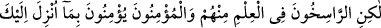
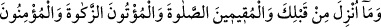
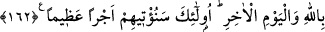

Allah’ın yasakladığı bir şeyin haram olduğuna delâlet eder. “ve haksız yollar ile”
rüşvet ve diğer haram yollarla “insanların mallarını yemeleri yüzünden”
“Ve içlerinden” onlardan tevbe edip îmana yönelmeyerek “inkâra sapanlara”
küfründe ısrar eden kâfirlere “acı bir azap hazırladık.” Öylesine çetin bir azap ki,
âhirette onun acısını ta yüreklerinde hissedeceklerdir. Nitekim dünyâda da daha önce
helal olan şeylerin kendilerine haram kılınması sûretiyle azâbı tatmışlardı. Esasen
“kendilerine” ve kendilerinden öncekilere “helal kılınmış bulunan temiz ve iyi şeyleri
onlara haram kıldık.” Güzel olan şeyleri onlara haram kılmamız zulümleri
sebebiyledir, onların iddiâ ettikleri gibi başka bir sebeple değil. Yahûdîler bir suç, bir
masiyet işledikleri zaman, daha önce kendilerine ve atalarına helal olan bir şey
kendilerine haram kılınır, böylece cezâlandırılırlardı. Mesela deve eti, sütü ve iç yağı
kendilerine haram kılınmıştı.
“et-Te’vîlâtü’n-Necmiyye”de şu inceliğe dikkat çekilir: Cenab-ı Hak yahûdîler
hakkında: “Biz onlara temiz ve iyi şeyleri haram kıldık.” (Nisa, 4/160) buyuruyor.
Muhammed ümmeti hakkında ise “(Peygamber) onlara temiz ve iyi şeyleri helal, pis
şeyleri haram kılar.” (A’raf, 7/157) ve “Allah’ın size verdiği rızıklardan helal ve
temiz olarak yeyin.” (Maide, 5/88) buyurmuştur.
Bize, yâni Muhammed ümmetine günahlarımızdan ötürü herhangi bir şey haram
kılınmamıştır. Allah’ın bizi bu âyetlerle temiz ve güzel olan şeylerin haram
kılınmasından güvende kıldığı gibi, âhirette de acı bir azaptan emniyette kılmasını
umarız. Çünkü bu temiz ve güzel olan şeylerin haram kılınması ile âhirette acı bir azap
hazırlanması, ikisi âyette berâber zikredilmiştir.
Ehl-i işâret der ki: “Yasakları çiğnemek, mübah olanların haram kılınmasını
gerektirir.” Ben de derim ki: “Mübah olan şeylerde israfa düşmek, münacâttan mahrum
olmayı gerektirir.” “et-Te’vîlât”tan alınan kısım burada bitti.
Sa’dî (k.s.) demiştir ki:
Nefsinin her istediğinin peşine gitme
Bedenin rahatlığı, gönlün nurunu azaltır
162- Fakat içlerinden ilimde derinleşmiş olanlar ve mü’minler, sana indirilene ve
senden önce indirilene îman edenler, namazı kılanlar, zekâtı verenler, Allah’a ve
âhiret gününe inananlar var ya, işte onlara pek yakında büyük mükâfât vereceğiz.